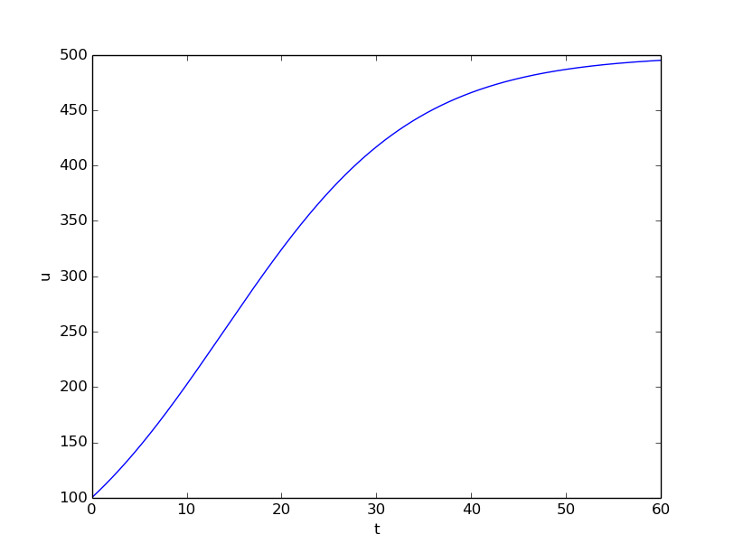

Population growth
Our first taste of differential equations regards modeling the growth of some population, such as a cell culture, an animal population, or a human population. The ideas even extend trivially to growth of money in a bank. Let \( N(t) \) be the number of individuals in the population at time \( t \). How can we predict the evolution of \( N(t) \) in time? Below we shall derive a differential equation whose solution is \( N(t) \). The equation reads $$ \begin{equation} N'(t) = rN(t), \tag{4.1} \end{equation} $$ where \( r \) is a number. Note that although \( N \) is an integer in real life, we model \( N \) as a real-valued function. We are forced to do this because the solution of differential equations are (normally continuous) real-valued functions. An integer-valued \( N(t) \) in the model would lead to a lot of mathematical difficulties.
With a bit of guessing, you may realize that \( N(t)=Ce^{rt} \), where \( C \) is any number. To make this solution unique, we need to fix \( C \), done by prescribing the value of \( N \) at some time, usually \( t=0 \). Say \( N(0) \) is given as \( N_0 \). Then \( N(t)=N_0e^{rt} \).
In general, a differential equation model consists of a differential equation, such as (4.1) and an initial condition, such as \( N(0)=N_0 \). With a known initial condition, the differential equation can be solved for the unknown function and the solution is unique.
It is, of course, very seldom that we can find the solution of a differential equation as easy as in this example. Normally, one has to apply certain mathematical methods, but these can only handle some of the simplest differential equations. However, we can easily deal with almost any differential equation by applying numerical methods and a bit of programming. This is exactly the topic of the present chapter.
Derivation of the model
It can be instructive to show how an equation like (4.1) arises. Consider some population of (say) an animal specie and let \( N(t) \) be the number of individuals in a certain spatial region, e.g. an island. We are not concerned with the spatial distribution of the animals, just the number of them in some spatial area where there is no exchange of individuals with other spatial areas. During a time interval \( \Delta t \), some animals will die and some new will be born. The number of deaths and births are expected to be proportional to \( N \). For example, if there are twice as many individuals, we expect them to get twice as many newborns. In a time interval \( \Delta t \), the net growth of the population will be $$ N(t+\Delta t) - N(t) = \hat b N(t) - \hat d N(t),$$ where \( \hat bN(t) \) is the number of newborns and \( \hat d N(t) \) is the number of deaths. If we double \( \Delta t \), we expect the proportionality constants \( \hat b \) and \( \hat d \) to double too, so it makes sense to think of \( \hat b \) and \( \hat d \) as proportional to \( \Delta t \) and "factor out" \( \Delta t \). That is, we introduce \( b=\hat b/\Delta t \) and \( d=\hat d/\Delta t \) to be proportionality constants for newborns and deaths independent of \( \Delta t \). Also, we introduce \( r=b-d \), which is the net rate of growth of the population per time unit. Our model then becomes $$ \begin{equation} N(t+\Delta t) - N(t) = \Delta t\, r N(t)\thinspace . \tag{4.2} \end{equation} $$
Equation (4.2) is actually a computational model. Given \( N(t) \), we can advance the population size by $$ N(t+\Delta t) = N(t) + \Delta t\, rN(t)\thinspace .$$ This is called a difference equation. If we know \( N(t) \) for some \( t \), e.g., \( N(0)=N_0 \), we can compute $$ \begin{align*} N(\Delta t) &= N_0 + \Delta t\, rN_0,\\ N(2\Delta t) &= N(\Delta t) + \Delta t\, rN(\Delta t),\\ N(3\Delta t) &= N(2\Delta t) + \Delta t\, rN(2\Delta t),\\ & \vdots\\ N((k+1)\Delta t) &= N(k\Delta t) + \Delta t\, rN(k\Delta t), \end{align*} $$ where \( k \) is some arbitrary integer. A computer program can easily compute \( N((k+1)\Delta t) \) for us with the aid of a little loop.
The solution of \( N'=rN \) is \( N=Ce^{rt} \) for any constant \( C \), and the initial condition is needed to fix \( C \) so the solution becomes unique. However, from a mathematical point of view, knowing \( N(t) \) at any point \( t \) is sufficient as initial condition. Numerically, we more literally need an initial condition: we need to know a starting value at the left end of the interval in order to get the computational formula going.
In fact, we do not need a computer since we see a repetitive pattern when doing hand calculations, which leads us to a mathematical formula for \( N((k+1)\Delta t) \), : $$ \begin{align*} N((k+1)\Delta t) &= N(k\Delta t) + \Delta t\, rN(k\Delta t) = N(k\Delta t)(1+\Delta t\, r)\\ &= N((k-1)\Delta t)(1+\Delta t\,r)^2\\ &\vdots\\ &= N_0(1+\Delta t\,r)^{k+1}\thinspace . \end{align*} $$
Rather than using (4.2) as a computational model directly, there is a strong tradition for deriving a differential equation from this difference equation. The idea is to consider a very small time interval \( \Delta t \) and look at the instantaneous growth as this time interval is shrunk to an infinitesimally small size. In mathematical terms, it means that we let \( \Delta t\rightarrow 0 \). As (4.2) stands, letting \( \Delta t\rightarrow 0 \) will just produce an equation \( 0=0 \), so we have to divide by \( \Delta t \) and then take the limit: $$ \lim_{\Delta t\rightarrow 0}\frac{N(t+\Delta t)-N(t)}{\Delta t} = rN(t)\thinspace .$$ The term on the left-hand side is actually the definition of the derivative \( N'(t) \), so we have $$ N'(t) = rN(t),$$ which is the corresponding differential equation.
There is nothing in our derivation that forces the parameter \( r \) to be constant - it can change with time due to, e.g., seasonal changes or more permanent environmental changes.
As will be described later, \( r \) must in more realistic models depend on \( N \). The method of separation of variables then requires to integrate \( \int_{N_0}^{N} N/r(N)dN \), which quickly becomes non-trivial for many choices of \( r(N) \). The only generally applicable solution approach is therefore a numerical method.
Numerical solution
There is a huge collection of numerical methods for problems like (4.2), and in general any equation of the form \( u'=f(u,t) \), where \( u(t) \) is the unknown function in the problem, and \( f \) is some known formula of \( u \) and optionally \( t \). For example, \( f(u,t)=ru \) in (4.2). We will first present a simple finite difference method solving \( u'=f(u,t) \). The idea is four-fold:
- Introduce a mesh in time with \( N_t+1 \) points \( t_0,t_1,\ldots,t_{N_t} \). We seek the unknown \( u \) at the mesh points \( t_n \), and introduce \( u^n \) as the numerical approximation to \( u(t_n) \), see Figure 20.
- Assume that the differential equation is valid at the mesh points.
- Approximate derivatives by finite differences, see Figure 21.
- Formulate a computational algorithm that can compute a new value \( u^n \) based on previously computed values \( u^i \), \( i < n \).
Figure 20: Mesh in time with corresponding discrete values (unknowns).

Figure 21: Illustration of a forward difference approximation to the derivative.

An example will illustrate the steps. First, we introduce the mesh, and very often the mesh is uniform, meaning that the spacing between points \( t_n \) and \( t_{n+1} \) is constant. This property implies that $$ t_n = n\Delta t,\quad n=0,1,\ldots, N_t\thinspace . $$ Second, the differential equation is supposed to hold at the mesh points. Note that this is an approximation, because the differential equation is originally valid at all real values of \( t \). We can express this property mathematically as $$ u'(t_n)=f(u^n,t_n),\quad n=0,1,\ldots,N_t\thinspace .$$ For example, with our model equation \( u'=ru \), we have the special case $$ u'(t_n)=ru^n,\quad n=0,1,\ldots,N_t,$$ or $$ u'(t_n)=r(t_n)u^n,\quad n=0,1,\ldots,N_t,$$ if \( r \) depends explicitly on \( t \).
Third, derivatives are to be replaced by finite differences. To this end, we need to know specific formulas for how derivatives can be approximated by finite differences. One simple possibility is to use the definition of the derivative from any calculus book, $$ u'(t) = \lim_{\Delta t\rightarrow 0}\frac{u(t+\Delta t)-u(t)}{\Delta t}\thinspace .$$ At an arbitrary mesh point \( t_n \) this definition can be written as $$ u'(t_n) = \lim_{\Delta t\rightarrow 0}\frac{u^{n+1}-u^n}{\Delta t}\thinspace .$$ Instead of going to the limit \( \Delta t\rightarrow 0 \) we can use a small \( \Delta t \), which yields a computable approximation to \( u'(t_n) \): $$ u'(t_n) \approx \frac{u^{n+1}-u^n}{\Delta t}\thinspace .$$ This is known as a forward difference since we go forward in time (\( u^{n+1} \)) to collect information in \( u \) to estimate the derivative. Figure 21 illustrates the idea. The error in of the forward difference is proportional to \( \Delta t \) (often written as \( \Oof{\Delta t} \), but will not use this notation in the present book).
We can now plug in the forward difference in our differential equation sampled at the arbitrary mesh point \( t_n \): $$ \begin{equation} \frac{u^{n+1}-u^n}{\Delta t} = f(u^n,t_n), \tag{4.3} \end{equation} $$ or with \( f(u,t)=ru \) in our special model problem for population growth, $$ \begin{equation} \frac{u^{n+1}-u^n}{\Delta t} = ru^n\thinspace . \tag{4.4} \end{equation} $$ If \( r \) depends on time, we insert \( r(t_n)=r^n \) for \( r \) in this latter equation.
The fourth step is to derive a computational algorithm. Looking at (4.3), we realize that if \( u^n \) should be known, we can easily solve with respect to \( u^{n+1} \) to get a formula for \( u \) at the next time level \( t_{n+1} \): $$ \begin{equation} u^{n+1}= u^n + \Delta t f(u^n,t_n)\thinspace . \tag{4.5} \end{equation} $$ Provided we have a known starting value, \( u^0=U_0 \), we can use (4.5) to advance the solution by first computing \( u^1 \) from \( u^0 \), then \( u^2 \) from \( u^1 \), \( u^3 \) from \( u^2 \), and so forth.
Such an algorithm is called a numerical scheme for the differential equation and often written compactly as $$ \begin{equation} u^{n+1}= u^n + \Delta t f(u^n,t_n),\quad u^0=U_0,\quad n=0,1,\ldots,N_t-1\thinspace . \tag{4.6} \end{equation} $$ This scheme is known as the Forward Euler scheme, also called Euler's method.
In our special population growth model, we have $$ \begin{equation} u^{n+1}= u^n + \Delta t\, ru^n,\quad u^0=U_0,\quad n=0,1,\ldots,N_t-1\thinspace . \tag{4.7} \end{equation} $$ We may also write this model using the problem-specific symbol \( N \) instead of the generic \( u \) function: $$ \begin{equation} N^{n+1}= N^n + \Delta t\, rN^n,\quad N^0=N_0,\quad n=0,1,\ldots,N_t-1\thinspace . \tag{4.8} \end{equation} $$
The observant reader will realize that (4.8) is nothing but the computational model (4.2) arising directly in the model derivation. The formula (4.8) arises, however, from a detour via a differential equation and a numerical method for the differential equation. This looks rather unnecessary! The reason why we bother to derive the differential equation model and then discretize it by a numerical method is simply that the discretization can be done in many ways, and we can create (much) more accurate and more computationally efficient methods than (4.8) or (4.6). This can be useful in many problems! Nevertheless, the Forward Euler scheme is intuitive and widely applicable, at least when \( \Delta t \) is chosen to be small.
Figure 22: The numerical solution at points can be extended by linear segments between the mesh points.

Programming the Forward Euler scheme; the special case
Let us compute (4.8) in a program. The input variables are \( N_0 \), \( \Delta t \), \( r \), and \( N_t \). Note that we need to compute \( N_t+1 \) new values \( N^1,\ldots,N^{N_t+1} \). A total of \( N_t+2 \) values are needed in an array representation of \( N^n \), \( n=0,\ldots,N_t+1 \).
Our first version of this program is as simple as possible:
N_0 = input('Give initial population size N_0: ')
r = input('Give net growth rate r: ')
dt = input('Give time step size: ')
N_t = input('Give number of steps: ')
from numpy import linspace, zeros
t = linspace(0, (N_t+1)*dt, N_t+2)
N = zeros(N_t+2)
N[0] = N_0
for n in range(N_t+1):
N[n+1] = N[n] + r*dt*N[n]
import matplotlib.pyplot as plt
numerical_sol = 'bo' if N_t < 70 else 'b-'
plt.plot(t, N, numerical_sol, t, N_0*exp(r*t), 'r-')
plt.legend(['numerical', 'exact'], loc='upper left')
plt.xlabel('t'); plt.ylabel('N(t)')
filestem = 'growth1_%dsteps' % N_t
plt.savefig('%s.png' % filestem); plt.savefig('%s.pdf' % filestem)
The complete code above resides in the file growth1.py.
Let us demonstrate a simulation where we start with 100 animals, a net growth rate of 10 percent (0.1) per time unit, which can be one month, and \( t\in [0,20] \) months. We may first try \( \Delta t \) of half a month (0.5), which implies \( N_t=40 \) (or to be absolutely precise, the last time point to be computed according to our set-up above is \( t_{N_t+1}=20.5 \)). Figure 23 shows the results. The solid line is the exact solution, while the circles are the computed numerical solution. The discrepancy is clearly visible. What if we make \( \Delta t \) 10 times smaller? The result is displayed in Figure 24, where we now use a solid line also for the numerical solution (otherwise, 400 circles would look very cluttered, so the program has a test on how to display the numerical solution, either as circles or a solid line). We can hardly distinguish the exact and the numerical solution. The computing time is also a fraction of a second on a laptop, so it appears that the Forward Euler method is sufficiently accurate for practical purposes. (This is not always true for large, complicated simulation models in engineering, so more sophisticated methods may be needed.)
Figure 23: Evolution of a population computed with time step 0.5 month.

Figure 24: Evolution of a population computed with time step 0.05 month.

It is also of interest to see what happens if we increase \( \Delta t \) to 2 months. The results in Figure 25 indicate that this is an inaccurate computation.
Figure 25: Evolution of a population computed with time step 2 months.

Understanding the Forward Euler method
The good thing about the Forward Euler method is that it gives an understanding of what a differential equation is and a geometrical picture of how to construct the solution. The first idea is that we have already computed the solution up to some time point \( t_n \). The second idea is that we want to progress the solution from \( t_n \) to \( t_{n+1} \) as a straight line.
We know that the line must go through the solution at \( t_n \), i.e., the point \( (t_n, u^n) \). The differential equation tells us the slope of the line: \( u'(t_n) = f(u^n,t_n)=ru^n \). That is, the differential equation gives a direct formula for the further direction of the solution curve. We can say that the differential equation expresses how the system (\( u \)) undergoes changes at a point.
There is a general formula for a straight line \( y=ax+b \) with slope \( a \) that goes through the point \( (x_0,y_0) \): \( y=a(x-x_0)+y_0 \). Using this formula adapted to the present case, and evaluating the formula for \( t_{n+1} \), results in $$ u^{n+1} = ru^n(t_{n+1} - t_n) + u^n = u^n + \Delta t\,ru^n,$$ which is nothing but the Forward Euler formula. You are now encouraged to do Exercise 44: Geometric construction of the Forward Euler method to become more familiar with the geometric interpretation of the Forward Euler method.
Programming the Forward Euler scheme; the general case
Our previous program was just a flat main program tailored to a
special differential equation. When programming mathematics, it is
always good to consider a (large) class of problems and making a
Python function to solve any problem that fits into the class. More
specifically, we will make software for the class of differential
equation problems of the form
$$ u'(t)=f(u,t),\quad u=U_0,\ t\in [0,T],$$
for some given function \( f \), and numbers \( U_0 \) and \( T \). We also take the opportunity
to illustrate what is commonly called a demo function. As the name implies,
the purpose of such a function is solely to demonstrate how the function works (not
to be confused with a test function, which does verification by use of assert). The Python function
calculating the solution must take \( f \), \( U_0 \), \( \Delta t \), and
\( T \) as input, find the corresponding \( N_t \), compute the solution, and return and
array with \( u^0,u^1,\ldots,u^{N_t} \) and an array with
\( t_0,t_1,\ldots,t_{N_t} \). The Forward Euler scheme reads
$$ u^{n+1}=u^n + \Delta t f(u^n,t_n),\quad n=0,\ldots,N_t-1\thinspace .$$
The corresponding program may now take the form
(file ode_FE.py):
from numpy import linspace, zeros, exp
import matplotlib.pyplot as plt
def ode_FE(f, U_0, dt, T):
N_t = int(round(float(T)/dt))
u = zeros(N_t+1)
t = linspace(0, N_t*dt, len(u))
u[0] = U_0
for n in range(N_t):
u[n+1] = u[n] + dt*f(u[n], t[n])
return u, t
def demo_population_growth():
"""Test case: u'=r*u, u(0)=100."""
def f(u, t):
return 0.1*u
u, t = ode_FE(f=f, U_0=100, dt=0.5, T=20)
plt.plot(t, u, t, 100*exp(0.1*t))
plt.show()
if __name__ == '__main__':
demo_population_growth()
This program file, called ode_FE.py, is a reusable piece of code with a
general ode_FE function that can solve any differential equation
\( u'=f(u,t) \) and a demo function for the special case \( u'=0.1u \),
\( u(0)=100 \).
Observe that the call to the demo function is placed in a
test block. This implies that the call is not active if ode_FE is imported
as a module in another program, but active if ode_FE.py is run as a
program.
The solution should be identical to what the growth1.py program
produces with the same parameter settings (\( r=0.1 \), \( N_0=100 \)).
This feature can easily be tested by inserting a print statement, but
a much better, automated verification is suggested in
Exercise 44: Geometric construction of the Forward Euler method. You are strongly encouraged to take
a "break" and do that exercise now.
u as variable.
In the ode_FE program, the variable u is used in different
contexts. Inside the ode_FE function, u is an array, but in
the f(u,t) function, as exemplified in the demo_population_growth
function, the argument u is
a number. Typically, we call f (in ode_FE) with the u argument as
one element of the array u in the ode_FE function:
u[n].
Making the population growth model more realistic
Exponential growth of a population according the model \( N'=rN \), with exponential solution \( N=N_0e^{rt} \), is unrealistic in the long run because the resources needed to feed the population are finite. At some point there will not be enough resources and the growth will decline. A common model taking this effect into account assumes that \( r \) depends on the size of the population, \( N \): $$ N(t+\Delta t) - N(t) = r(N(t))N(t)\thinspace .$$ The corresponding differential equation becomes $$ N' = r(N)N\thinspace .$$ The reader is strongly encouraged to repeat the steps in the derivation of the Forward Euler scheme and establish that we get $$ N^{n+1} = N^n + \Delta t\, r(N^n)N^n,$$ which computes as easy as for a constant \( r \), since \( r(N^n) \) is known when computing \( N^{n+1} \). Alternatively, one can use the Forward Euler formula for the general problem \( u'=f(u,t) \) and use \( f(u,t)=r(u)u \) and replace \( u \) by \( N \).
The simplest choice of \( r(N) \) is a linear function, starting with some growth value \( \bar r \) and declining until the population has reached its maximum, \( M \), according to the available resources: $$ r(N) = \bar r(1 - N/M)\thinspace .$$ In the beginning, \( N\ll M \) and we will have exponential growth \( e^{\bar rt} \), but as \( N \) increases, \( r(N) \) decreases, and when \( N \) reaches \( M \), \( r(N)=0 \) so there is now more growth and the population remains at \( N(t)=M \). This linear choice of \( r(N) \) gives rise to a model that is called the logistic model. The parameter \( M \) is known as the carrying capacity of the population.
Let us run the logistic model with aid of the ode_FE function in
the ode_FE module. We choose \( N(0)=100 \), \( \Delta t=0.5 \) month,
\( T=60 \) months, \( r=0.1 \), and \( M=500 \). The complete program, called
logistic.py,
is basically a call to ode_FE:
from ode_FE import ode_FE
import matplotlib.pyplot as plt
for dt, T in zip((0.5, 20), (60, 100)):
u, t = ode_FE(f=lambda u, t: 0.1*(1 - u/500.)*u, \
U_0=100, dt=dt, T=T)
plt.figure() # Make separate figures for each pass in the loop
plt.plot(t, u, 'b-')
plt.xlabel('t'); plt.ylabel('N(t)')
plt.savefig('tmp_%g.png' % dt); plt.savefig('tmp_%g.pdf' % dt)
Figure 26 shows the resulting curve. We see that the population stabilizes around \( M=500 \) individuals. A corresponding exponential growth would reach \( N_0e^{rt}=100e^{0.1\cdot 60}\approx 40,300 \) individuals!
Figure 26: Logistic growth of a population.

It is always interesting to see what happens with large \( \Delta t \) values. We may set \( \Delta t=20 \) and \( T=100 \). Now the solution, seen in Figure 27, oscillates and is hence qualitatively wrong, because one can prove that the exact solution of the differential equation is monotone. (However, there is a corresponding difference equation model, \( N_{n+1}=rN_n(1-N_n/M) \), which allows oscillatory solutions and those are observed in animal populations. The problem with large \( \Delta t \) is that it just leads to wrong mathematics - and two wrongs don't make a right in terms of a relevant model.)
Figure 27: Logistic growth with large time step.

This example shows the limitation of a differential equation model: we need to know all input parameters, including \( r(t) \), in order to predict the future. It is seldom the case that we know all input parameters. Sometimes knowledge of the solution from measurements can help estimate missing input parameters.
Verification: exact linear solution of the discrete equations
How can we verify that the programming of an ODE model is correct? The best method is to find a problem where there are no unknown numerical approximation errors, because we can then compare the exact solution of the problem with the result produced by our implementation and expect the difference to be within a very small tolerance. We shall base a unit test on this idea and implement a corresponding test function (see the section Constructing unit tests and writing test functions) for automatic verification of our implementation.
It appears that most numerical methods for ODEs will exactly reproduce a solution \( u \) that is linear in \( t \). We may therefore set \( u=at+b \) and choose any \( f \) whose derivative is \( a \). The choice \( f(u,t)=a \) is very simple, but we may add anything that is zero, e.g., $$ f(u,t) = a + (u - (at+b))^m.$$ This is a valid \( f(u,t) \) for any \( a \), \( b \), and \( m \). The corresponding ODE looks highly non-trivial, however: $$ u' = a + (u - (at+b))^m.$$
Using the general ode_FE function in
ode_FE.py,
we may
write a proper test function as follows
(in file
test_ode_FE_exact_linear.py):
def test_ode_FE():
"""Test that a linear u(t)=a*t+b is exactly reproduced."""
def exact_solution(t):
return a*t + b
def f(u, t): # ODE
return a + (u - exact_solution(t))**m
a = 4
b = -1
m = 6
dt = 0.5
T = 20.0
u, t = ode_FE(f, exact_solution(0), dt, T)
diff = abs(exact_solution(t) - u).max()
tol = 1E-15 # Tolerance for float comparison
success = diff < tol
assert success
Recall that test functions should start with the name test_, have
no arguments, and formulate the test as a boolean expression success that is
True if the test passes and False if it fails. Test functions should
make the test as assert success (here success can also be boolean
expression as in assert diff < tol).
Observe that we cannot compare diff to zero, which is what we mathematically
expect, because diff is a floating-point variable that most likely
contains small rounding errors. Therefore, we must compare diff to
zero with a tolerance, here \( 10^{-15} \).
You are encouraged to do Exercise 45: Make test functions for the Forward Euler method where the goal is to make a test function for a verification based on comparison with hand-calculated results for a few time steps.